放っておけない、
「ほっとする」HOTな場所。
豊田市 本新町の多目的複合施設
介護付有料老人ホームから、温浴施設、コミュニティセンター、保育室、内科・薬局まで。小さなお子さまから高齢の方まで、地域のみなさまが集う場所です。
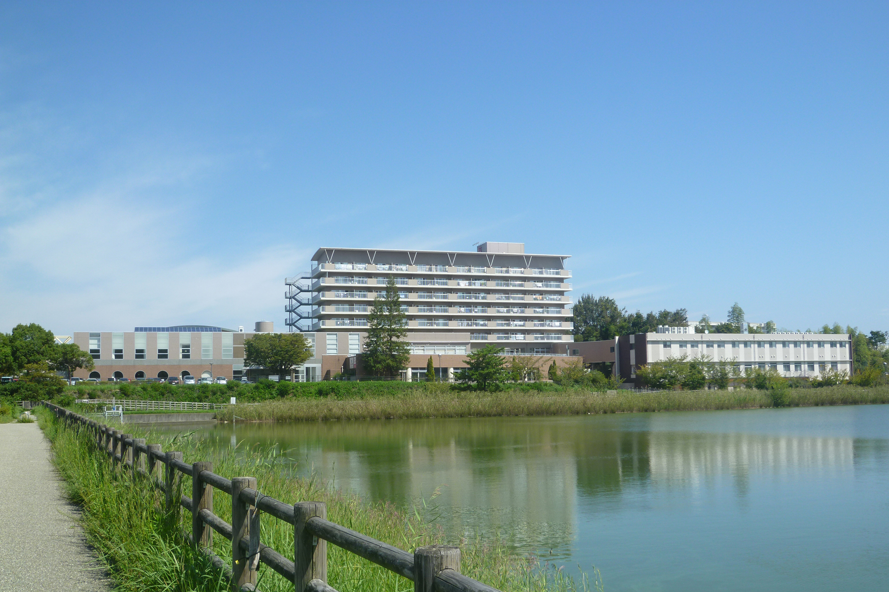


お知らせ
弊社社長を騙った不審メールにご注意ください
弊社社長名を騙る「なりすましメール」が確認されています。添付ファイルの参照・URLのクリック・返信はせず、削除をお願いいたします。詳しくはこちら
- 重要弊社社長を騙った不審メールに関する注意喚起のお知らせ
- じゅわじゅわ10月の「じゅわじゅわ健康講座」開催日のお知らせ
- 介護デイサービス レクリエーション予定表を更新しました
- コミセン貸室のご予約は「豊田市公共施設予約システム」をご利用ください
- 保育室どんぐり保育室のInstagramを始めました
- 介護認知症カフェ「そよ風カフェ」開催のご案内
施設・サービスのご案内
同じ敷地内の本館・東館に、さまざまな施設がそろっています。
-
介護・住まい
介護付有料老人ホーム
南向きの居室から池を望む、70戸の住まい。自立の方から要介護の方まで。
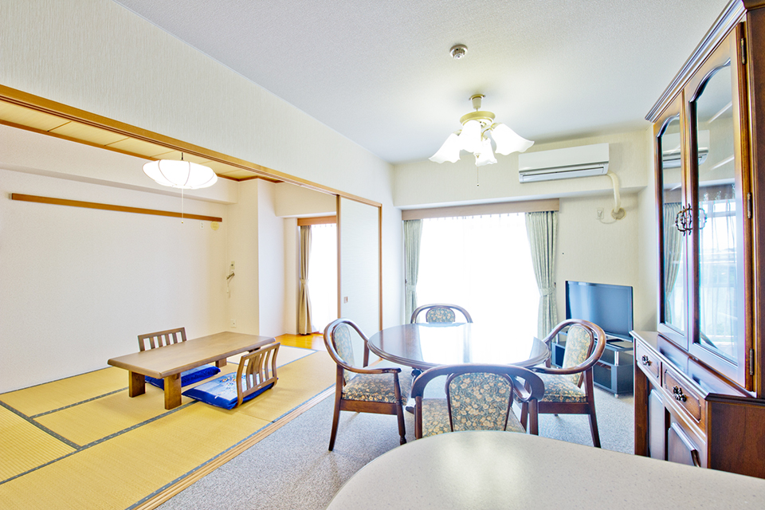
-
健康づくり
温浴施設じゅわじゅわ
20種類の温浴メニューと、地下1,300mから湧く「割目池温泉ほっとかんの湯」。

-
介護のご相談
地域包括支援センター
豊田市から委託を受けた、逢妻地区の高齢者の公的な相談窓口です。相談は無料です。

-
地域交流
西部コミュニティセンター
図書室、多目的ホール、会議室、調理室、和室など。目的に合わせてご利用いただけます。
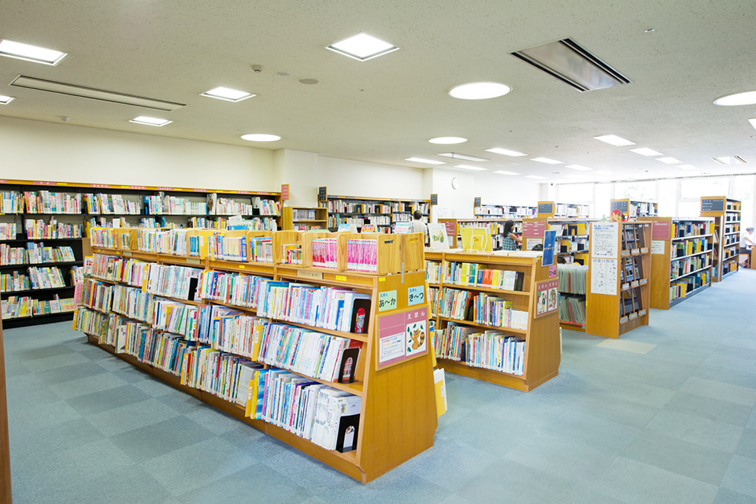
-
医療
ふじしま内科
本館2階に併設されている内科クリニックです。
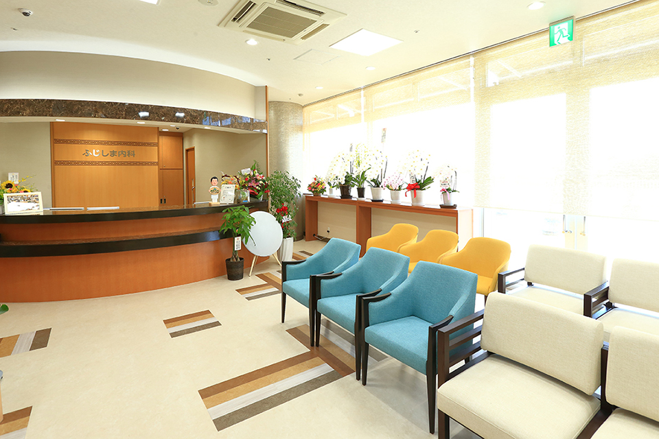
-
医療
あおい調剤薬局
本館1階に併設されている調剤薬局です。
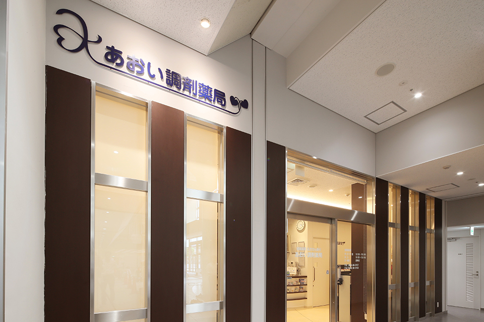
-
介護・住まい
介護付有料老人ホーム 東館
2018年10月開設。介護が必要な方のための18室の住まいです。
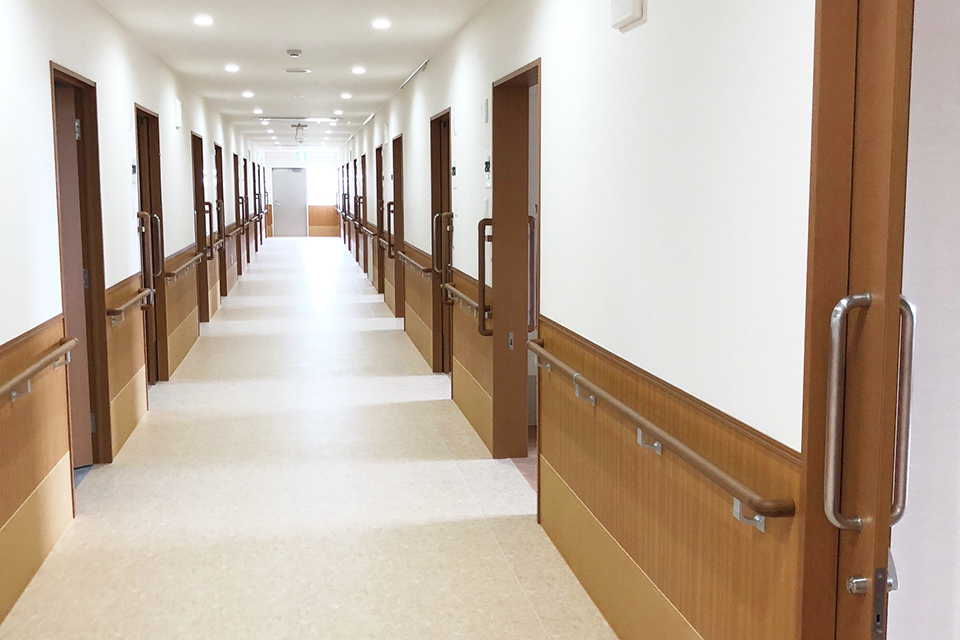
-
デイサービス
一般デイサービス
温泉への入浴、レクリエーション、音楽を使った認知症予防など。月〜土曜（祝日も実施）。
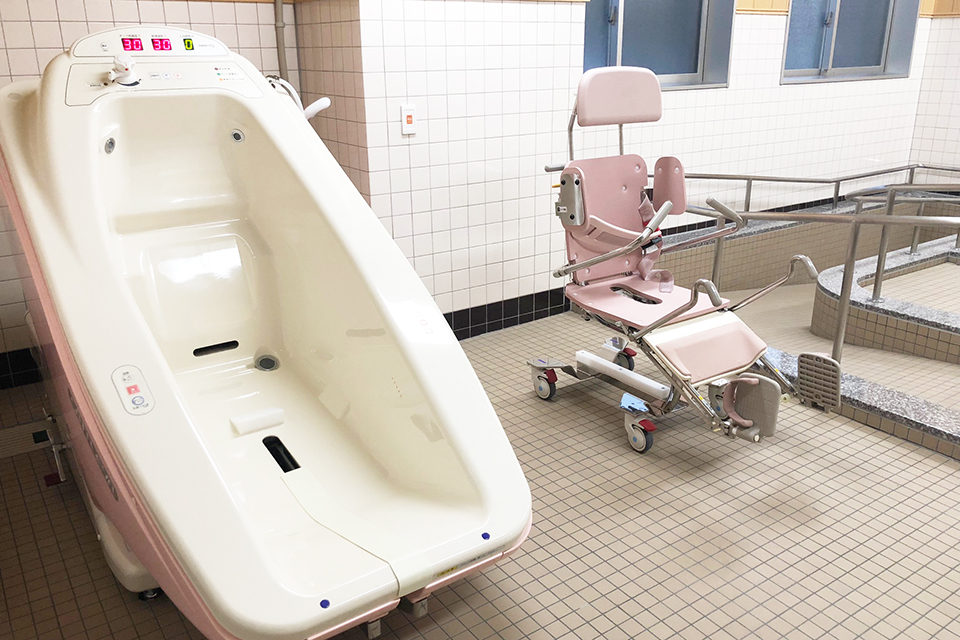
-
デイサービス
リハビリデイサービス
最新の機器と理学療法士・作業療法士による、機能訓練特化型のデイサービスです。
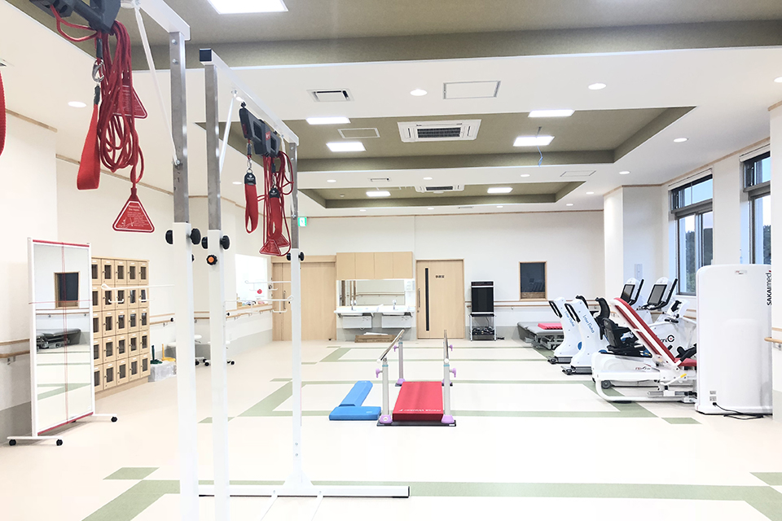
-
介護のご相談
居宅介護支援事業所
ケアマネジャーが、介護認定を受けた方のケアプランを作成します。

-
子育て
どんぐり保育室
地域のみなさまもご利用いただける、企業主導型の保育所です。
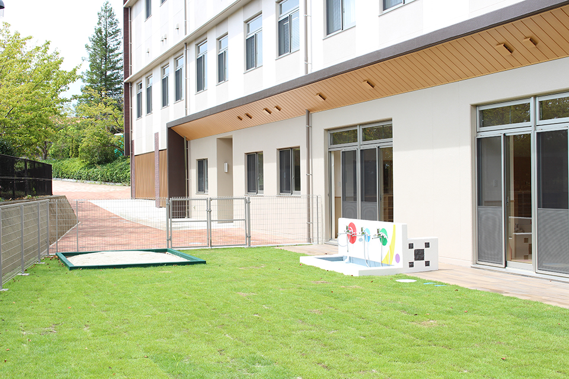
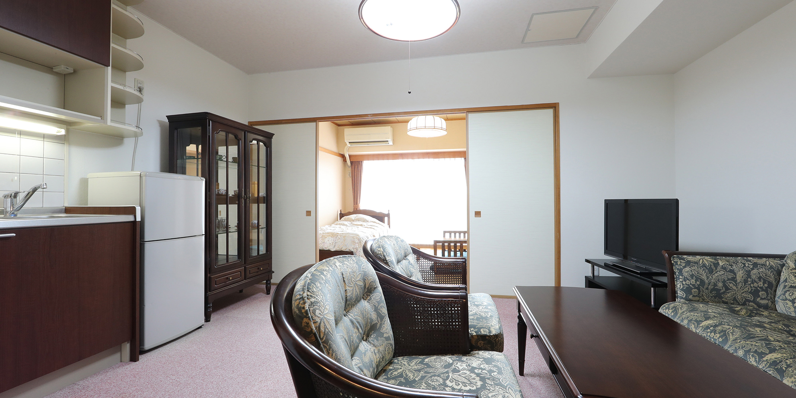
地域とともに歩む、
多目的複合施設です。
安心・健康・生きがい・交流。ひとつの場所に、暮らしを支える機能が集まっています。
株式会社豊田ほっとかんは、1995年に豊田市と民間事業者が協働して設立した第三セクターです。1997年の開設以来、高齢の方が生きがいを持って気持ちよく暮らせる環境と、誰もが安心して生活できる地域社会づくりに取り組んでいます。
- 開設1997年
- 老人ホーム居室88室（本館70・東館18）
- 温浴メニュー20種
- 源泉の深さ1,300m
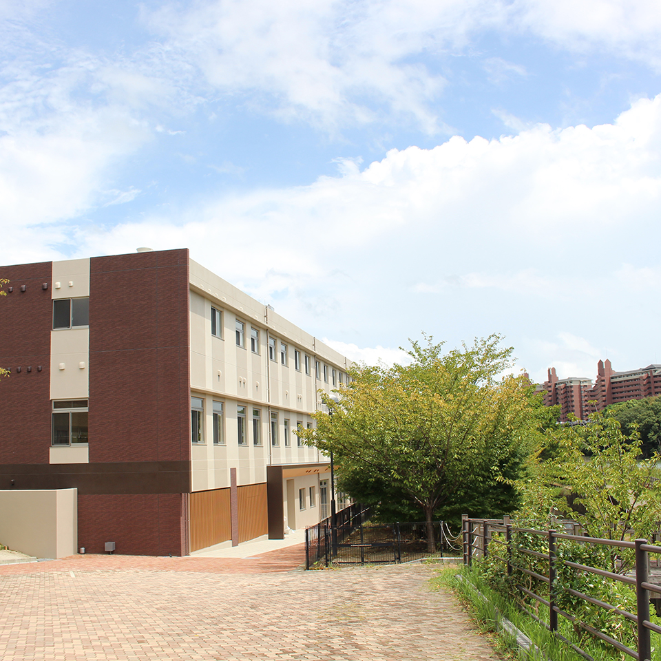
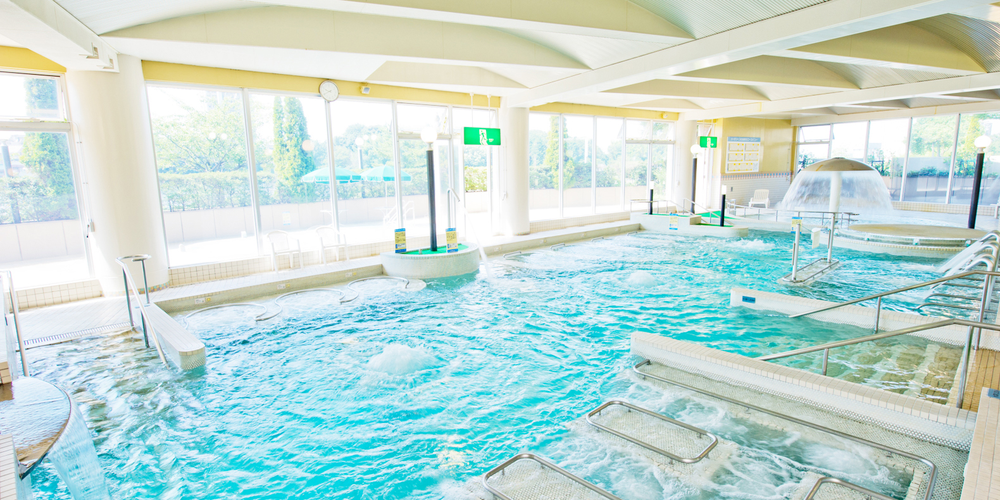

豊田市温浴施設
じゅわじゅわ
水着で気軽に楽しめる温浴フィットネス「バーデゾーン」と、地下1,300mから湧き出す「割目池温泉ほっとかんの湯」。一般の方もご利用いただけます。
| 営業時間 | 午前10:00〜午後9:00 |
|---|---|
| 定休日 | 毎月第1月曜日（祝日の場合は翌週） |
| プール＋温泉 | 大人 700円／60歳以上 500円／子ども 400円 |
| 温泉のみ | 中学生以上 500円／子ども 300円 |
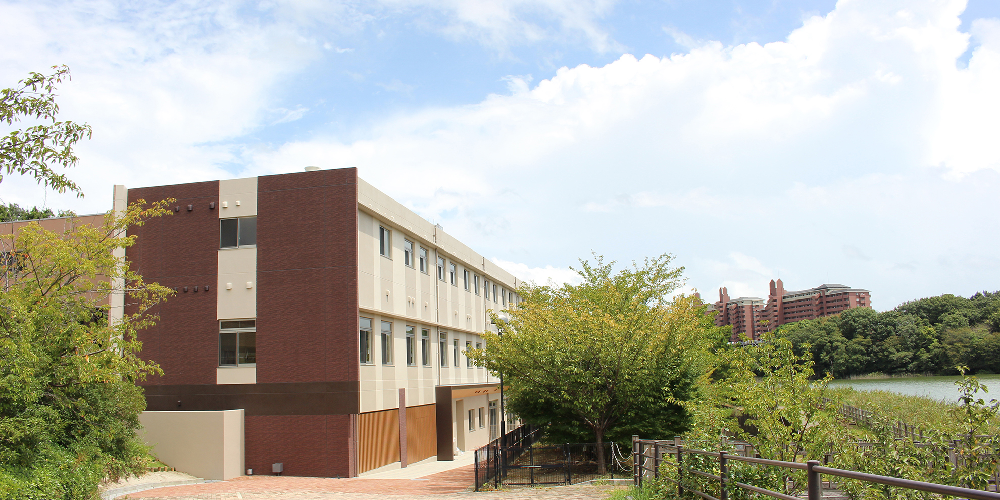
目的からさがす
ご利用になりたいサービスをお選びください。
各種サービス・関連リンク
- 豊田市公共施設予約システム西部コミュニティセンターの貸室はこちらからご予約いただけます。（新しいタブで開く）
- 介護サービス情報公表システム有料老人ホーム・デイサービス・リハビリデイの公表情報（厚生労働省）（新しいタブで開く）
- LIFULL介護 紹介ページほっとかんの有料老人ホームの紹介ページです。（新しいタブで開く）
- よくあるご質問西部コミュニティセンター・温浴施設じゅわじゅわについてのよくあるご質問。
- ほっとかん Facebook日々の様子や季節のイベントを発信しています。（新しいタブで開く）
- どんぐり保育室 Instagram保育室の子どもたちの様子をご覧いただけます。（新しいタブで開く）
アクセス・お問い合わせ
ショッピングセンターが徒歩圏内。敷地内に銀行ATM、内科・薬局もあります。
- 所在地
- 〒471-0046
愛知県豊田市本新町7丁目48番地6 - 最寄り駅
- 愛環 新豊田駅・名鉄 豊田市駅から約4km
- FAX
- 0565-36-3002
- 代表・有料老人ホーム0565-36-3000
- デイサービスセンター0565-36-3008
- 地域包括支援センター0565-36-3006